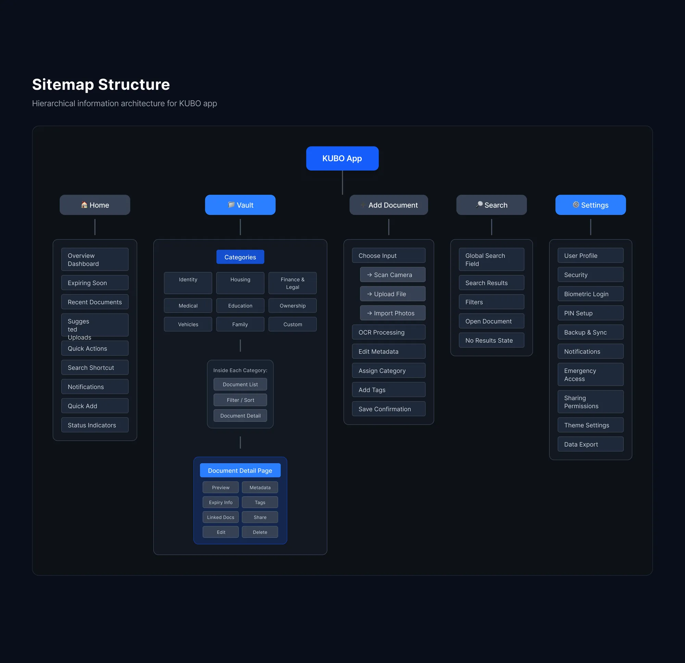
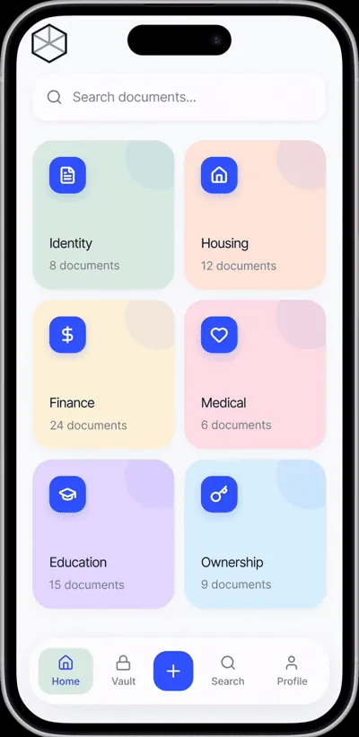
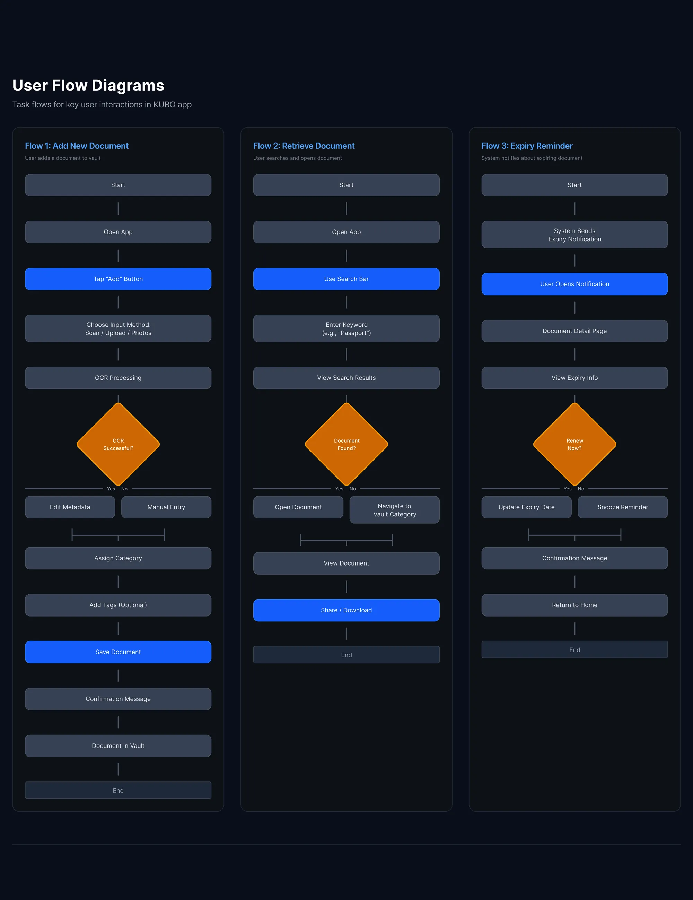
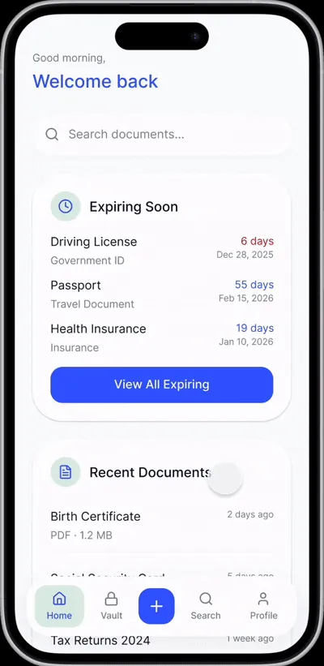
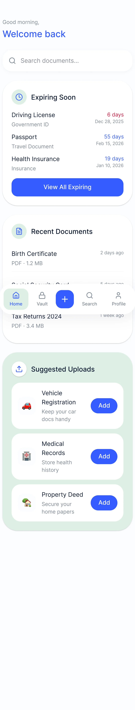

Kubo
A calm place for the documents that matter most when you need them quickly.
- Project type
- Mobile concept
- Year
- 2025
- Role
- UX and UI design
- Scope
- Architecture, flows and mobile UI

The problem01
Needed rarely.
Needed urgently.
Passport, insurance, contracts, medical records: most people keep them in a mix of screenshots, email attachments and cloud folders. You rarely need them, but when you do, you need them fast, and that’s exactly when the mix fails.
The principle02
Complexity behind the scenes, simplicity in front
The sitemap looks busy because it describes the whole system: categories, metadata, reminders and settings. What the user sees is deliberately flat. Everything important is one or two taps from the home screen, and the rest stays in the background.

Never ask twice03
Three flows, one rule
Re-confirming, re-entering and re-authenticating break trust in a product like this. Every flow had to avoid asking for something it already knows.
- 01
Adding a document
- Why
- Typing out document details is where people give up.
- Evidence
- The add flow scans, uploads or takes a photo, then reads it.
- Changed
- OCR fills in the details; you only check them and pick a category.

The vault, organised by category - 02
Finding it again
- Why
- In the urgent moment you remember a word, not a folder.
- Evidence
- The retrieve flow starts from search: type “Passport”, open it.
- Changed
- Search on the home screen, with share and download right on the document.

The three flows: adding, retrieving, expiry reminder - 03
Before it expires
- Why
- The worst time to discover an expired passport is when you need it.
- Evidence
- The third flow is a reminder: Kubo notifies you, you renew or snooze.
- Changed
- “Expiring soon” sits at the top of the home screen.

Home screen with documents that expire soon
Final interface04
A notebook, not a database
No nudges, no upsells. The visual language comes from notebooks and document folders rather than security software.

Reflection05
What I’d revisit
- Still open
- Sharing. Giving someone temporary access to a document is where most trust products fail. Kubo handles it at the end of the retrieve flow, but it deserves its own design.
- Next
- Treat sharing as the headline feature rather than an edge case.
- What it taught me
- Designing for trust is mostly restraint: the absence of friction is the reassurance.